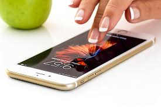

Phone Usage

Now we are going to get into the specifics. I know most of us depend on our phones on a daily basis for many things like communicating, socializing, and even for safety, but it hasn't always been like that. Phone usage has increased an immense amout over the past years. Americans are spending more time on their phones than ever before, with average daily usage reaching 5 hours and 16 minutes. This represents a significant increase from 4 hours and 37 minutes in 2024, a 14% rise. Gen Z spends the most time on their phones, averaging 6 hours and 27 minutes per day, while Baby Boomers spend a little over 4 hours, still more than double the recommended limit.
Increased Ownership
Cell phone ownership has increased by 20% since 2015, with over 98% of Americans owning a cell phone in 2024.